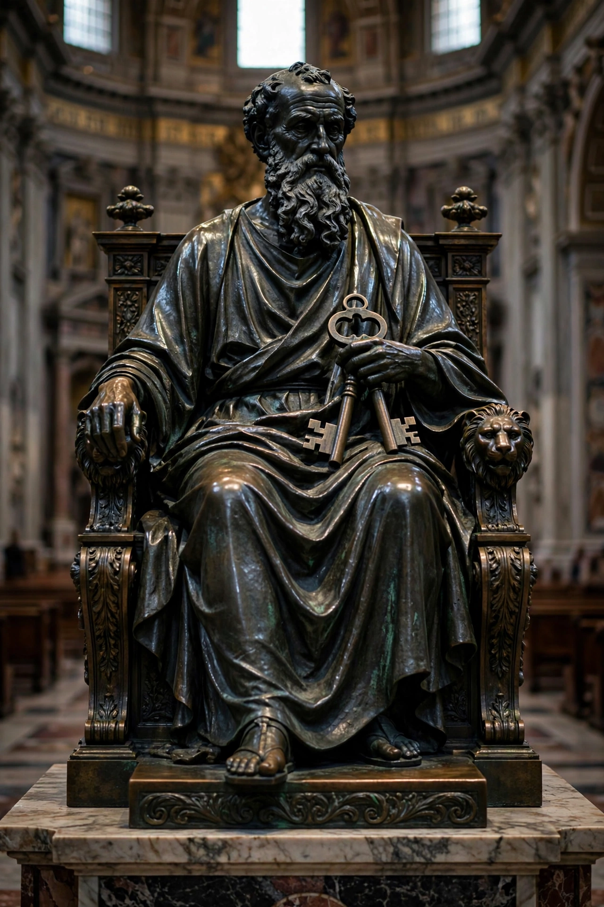

| Born | Simon, c. 1 AD, Bethsaida, Gaulanitis |
|---|---|
| Died | c. 64–68 AD, Rome (traditionally crucified) |
| Feast | 29 June (with Saint Paul) |
| Attributes | Keys of heaven, rooster, inverted cross |
| Patronage | Fishermen, the papacy, Rome |
Saint Peter (died c. 64–68 AD), also known as Peter the Apostle, Simon Peter, Simeon, Simon, or Cephas, was one of the Twelve Apostles of Jesus Christ and one of the first leaders of the early Christian Church. He appears prominently in the four Gospels and the Acts of the Apostles.
Peter was a fisherman on the Sea of Galilee, called by Jesus together with his brother Andrew. In the Gospel of Matthew, Jesus declares that Peter is the "rock" on which he will build his church and gives him the keys of the kingdom of heaven — the basis of the Catholic doctrine of Petrine primacy and of the papacy. The New Testament also records Peter's triple denial of Jesus during the Passion, followed by his restoration after the resurrection.
After the resurrection, Peter emerges as spokesman of the Jerusalem church: he preaches at Pentecost, heals, defends the apostles before the Sanhedrin, and — following a vision at Joppa — baptises the Roman centurion Cornelius, opening the church to Gentiles. In Acts he is later imprisoned by Herod Agrippa and, according to the narrative, miraculously freed. Paul's letters show occasional tension between Peter and Paul, notably the incident at Antioch over table fellowship with Gentiles.
According to tradition, Peter travelled to Rome and was martyred there under Nero, being crucified upside down at his own request because he felt unworthy to die in the same manner as Jesus. St Peter's Basilica in Vatican City is built over the site traditionally identified as his tomb; excavations beneath the basilica have revealed an early necropolis and a shrine associated with his memory.
Two epistles, the First and Second Epistles of Peter, are attributed to him in the New Testament. Scholars debate their authorship; many regard at least 2 Peter as written in his name by a later follower. The apocryphal Gospel of Peter and Acts of Peter also circulated under his name.
Peter is venerated as a saint in all major Christian traditions. The Catholic Church regards him as the first pope. He is usually depicted as an older man holding keys, and in reference to his denial, with a rooster. His feast day, shared with Paul, is 29 June.
See also: Acts of the Apostles · Pope · St. Peter's Basilica · Twelve Apostles